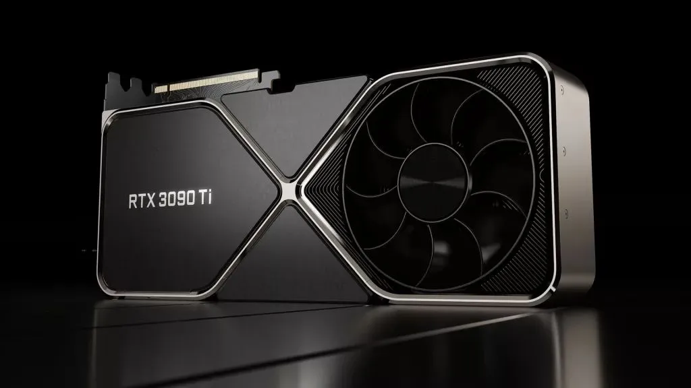
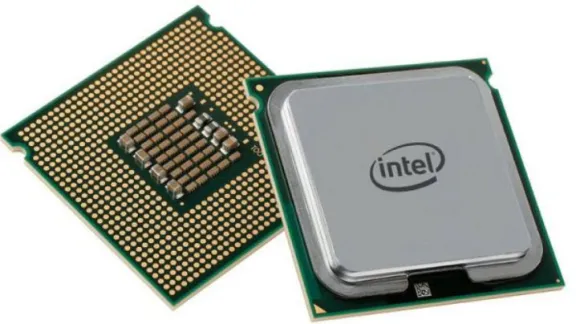
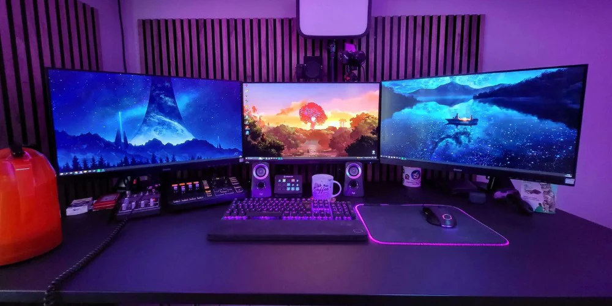

Graphics Card (GPU)
The graphics processing unit (GPU) is arguably the most important part of a computer and is in charge of rendering graphics and handling complex calculations for games. There are two main competitors in the market for GPU's: NVIDIA and AMD. Nvidia is usually the better option because it supports features like DLSS which in most games can boost your frame rate by using AI to generate more frames. Nvidia dominates the gaming and AI industry with its revolutionary GPU's. The best GPU by Nvidia that offers performance for a great price is the RTX 4070. Here is the link where you can buy an RTX 4070 on Amazon.

Processor (CPU)
The Central Processing Unit (CPU) is important for both gaming and casual computers. The CPU is in charge of running mathematical calculations and is slower than the GPU at graphics tasks. However the CPU is still important because it is needed to run your OS and other software. While the GPU has its own dedicated video memory (VRAM), the CPU uses the system's RAM, which is installed on the motherboard and shared with other components. Think of it this way: the CPU is the brain that coordinates everything, while the GPU is the specialist that handles visuals. The best CPU for gaming is the AMD Ryzen 7 7800X3D. While for more casual use you would want the Intel I7-12700K. You can buy the Ryzen 7 7800X3D at Best Buy and the Intel I7-12700K at Best Buy.

RAM
Random Access Memory (RAM) is the temporary storage that your computer uses to hold data that is currently being used or processed. More RAM allows your computer to handle more tasks simultaneously without slowing down. The amount of RAM you need depends on your usage, but 16GB is a good starting point for most users. There are multiple generations of RAM: DDR3, DDR4, and DDR5, with DDR5 being the latest and fastest. It is not recommended to mix different generations of RAM for doing so can cause the computer to run very slow. You can buy 16GB of DDR5 RAM directly from Corsair.
Motherboard
The motherboard is what keeps the whole family together literally. It is in charge of connecting all the components of the computer together and allowing them to communicate with each other. Although the motherboard isn't as interesting as the CPU and GPU it is an important part of the system. When you get a motherboard you need to make sure that it can work with all your components. If you bought the AMD CPU and the same GPU as mentioned above you can buy a compatible motherboard on Amazon for AMD builds. If you bought the same GPU and the I7 CPU as mentioned above you can buy a compatible motherboard on Amazon for Intel builds.

Peripherals
Peripherals are external devices that connect to your computer, such as keyboards, mice, monitors, and printers. They allow you to interact with your computer and input or output data. The peripherals that matter most are your mouse, keyboard, and monitor. When buying a mouse you often want to buy one with a laser sensor, and adjustable DPI. There are two types of sensors that mice use to track their movement laser and optical. Lasers use a beam of light to detect movement, while optical sensors use infrared light to detect movement. DPI or Dots Per Inch measures the sensitivity of the mouse. When buying a keyboard it is best to buy a mechanical one. Mechanical keyboard offer better performance and durability. They also provide a satisfying "click clack" sound when typed with. When getting a monitor you want to make sure that it uses the same type of cable that your motherboard uses (often a HDMI cable) you also want the monitor to use a 144Hz refresh rate or higher which will allow it to display more frames when gaming. You can buy a cool gaming monitor on Amazon, a gaming mouse on Amazon, and a mechanical keyboard on Amazon.